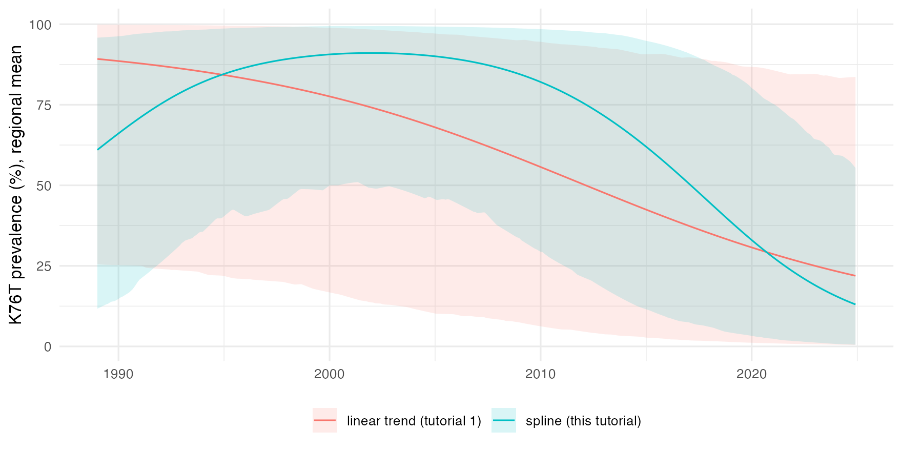
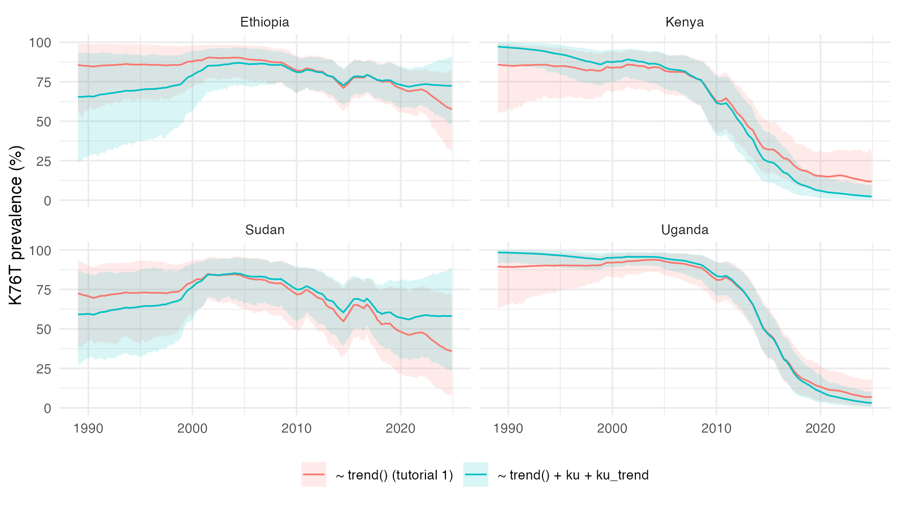

The fit of tutorial 1 had the default mean, an intercept and a linear trend in time, and the spatial-temporal field did the rest. Covariates move part of that variation into the mean. They can explain it, and they let areas with the same covariate values borrow strength from each other, including areas with no surveys.
stareal takes covariates as tables keyed by area, by time step, or by both. This tutorial uses the crt K76T data of tutorial 1, and builds its covariates from the frame itself: a smooth regional trend, and a contrast between Kenya and Uganda and the rest of the region. The last section shows how to build the same tables from a raster of your own, such as transmission intensity or elevation.
1. The data
As in tutorial 1, with the example data that ship with stareal:
iso3 <- c("DJI", "ERI", "ETH", "KEN", "SOM", "SSD", "SDN", "UGA")
adm1 <- sf::st_as_sf(geodata::gadm(iso3, level = 1, path = tempdir(), version = "4.1", resolution = 2))
lakes <- rnaturalearth::ne_download(scale = 10, type = "lakes", category = "physical",
returnclass = "sf", destdir = tempdir())
crs <- "+proj=laea +lat_0=8 +lon_0=37 +units=m"
adm1 <- sf::st_make_valid(sf::st_transform(adm1, crs))
lakes <- sf::st_make_valid(sf::st_transform(lakes, crs))
lakes <- lakes[as.numeric(sf::st_area(lakes)) > 1e9, ]
water <- sf::st_intersection(sf::st_union(lakes), sf::st_union(adm1))
adm1 <- sf::st_difference(adm1, water)
adm1 <- adm1[adm1$ENGTYPE_1 != "Water body", ] # what is left of Uganda's lake units
fr <- areal_frame(adm1, id = "GID_1", groups = c(country = "COUNTRY"), link_within = "country",
verbose = FALSE)
tf <- time_frame(1989, 2024, "month")
d <- areal_data(igad_crt76t, fr, tf, y = "positive", k = "tested",
coords = c("longitude", "latitude"), date = "collection_day", verbose = FALSE)2. Three kinds of covariate table
A covariate table is an ordinary data frame. Its key columns say what it varies over:
| Key columns | Varies by | One row per |
|---|---|---|
id |
area | area |
time (labels) or t (step numbers) |
time step | time step |
id and time (or t) |
area and time step | area-time cell |
Every other column is a covariate, named in the formula as it is
named in the table. A table must cover every area, every step or
every cell of the frame, not just the surveyed ones, because
predict() needs the covariates everywhere. Transforms and
interactions are computed as columns first: the formula takes plain
names (and trend()), not log(x) or
x:z.
The three tables of this tutorial:
# by time: a natural spline in calendar time, 3 degrees of freedom
year <- 1989 + (seq_len(tf$n_steps) - 1) / 12
basis <- splines::ns(year, df = 3)
by_time <- data.frame(time = tf$labels, s1 = basis[, 1], s2 = basis[, 2], s3 = basis[, 3])
# by area: 1 in Kenya and Uganda, 0 elsewhere
by_area <- data.frame(id = fr$ids, ku = as.numeric(fr$groups$country %in% c("Kenya", "Uganda")))
# by area and time: ku times a linear trend from -1 in the first month to 1 in the last
by_cell <- expand.grid(id = fr$ids, time = tf$labels, stringsAsFactors = FALSE)
by_cell$ku_trend <- by_area$ku[match(by_cell$id, by_area$id)] *
seq(-1, 1, length.out = tf$n_steps)[match(by_cell$time, tf$labels)]
head(by_time, 3)
#> time s1 s2 s3
#> 1 1989-01 0.000000000 0.000000000 0.000000000
#> 2 1989-02 -0.001764743 0.005294396 -0.003529598
#> 3 1989-03 -0.003529001 0.010588352 -0.007058901
head(by_area, 3)
#> id ku
#> 1 DJI.1_2 0
#> 2 DJI.6_1 0
#> 3 DJI.2_1 0
c(rows = nrow(by_cell), areas = fr$m, steps = tf$n_steps)
#> rows areas steps
#> 74304 172 432ku_trend is built to match trend(), which
also runs from −1 at the first step to 1 at the last.
Standardised or not
By default, numeric covariates are standardised: mean 0 and sd 1 over the areas, steps or cells of their table. A coefficient is then the effect of one sd, and the default prior on the fixed effects (normal, sd 3 on the logit scale) suits any units. Factors become one 0/1 column per level after the first, and are not standardised.
The covariates here are already on a unit scale, and their
coefficients are easier to read unstandardised, so the fits below use
scale_covariates = FALSE. With covariates in large units,
such as population or rainfall in millimetres, keep the default.
3. A covariate by time: a smooth regional trend
trend() makes the regional mean a straight line on the
logit scale. Anything else, such as a decline that starts late and then
levels off, is left to the field. A spline basis in the year lets the
mean bend:
fit_smooth <- fit_areal(d, ~ s1 + s2 + s3, covariates = by_time, scale_covariates = FALSE)
diagnose(fit_smooth)$checks
#> check value threshold direction pass
#> 1 theta R-hat (max) 1.004871 1.05 <= TRUE
#> 2 beta R-hat (max) 1.005461 1.05 <= TRUE
#> 3 latent R-hat (max) 1.009609 1.05 <= TRUE
#> 4 theta bulk ESS (min) 879.064798 400.00 >= TRUE
#> 5 beta bulk ESS (min) 857.784809 400.00 >= TRUE
#> 6 latent bulk ESS (median) 967.454713 100.00 >= TRUE
summary(fit_smooth)
#> <stareal_fit summary> 264 observed cells; 4 chains, 2000 iterations after burn-in
#> hyperparameters from the trace (8000 draws), fixed effects from the 1000 stored draws
#>
#> variable mean sd q2.5 q50 q97.5 rhat ess_bulk ess_tail
#> sigma 3.2500 0.36400 2.600 3.2300 4.010 1.003 1534 2388
#> rho_s 0.9390 0.05180 0.799 0.9540 0.990 1.003 1292 2129
#> rho_t 0.9970 0.00107 0.995 0.9970 0.999 1.005 1350 2310
#> sigma_n 0.6840 0.10600 0.483 0.6820 0.901 1.003 879 1220
#> intercept 0.5820 1.32000 -2.020 0.6160 3.130 1.001 984 952
#> s1 -0.0914 1.38000 -2.920 -0.0683 2.770 1.005 1039 972
#> s2 1.0200 2.13000 -3.210 1.0600 5.090 0.999 858 844
#> s3 -4.9100 1.38000 -7.430 -4.9000 -2.040 1.001 1015 832
#>
#> acceptance after burn-in: centred 0.26, surrogate 0.24; 0.0186 s per iteration
#> for every observed cell and a verdict, use diagnose()For comparison, the fit of tutorial 1, with the default
~ trend():
fit_linear <- fit_areal(d)The spline coefficients mean little one by one. The curve they make does: the regional mean on the prevalence scale, draw by draw, beside the straight line of tutorial 1. (This is the prevalence where the field is zero, roughly the median unit, not the average over units.)
curve <- function(fit, X) {
b <- posterior::as_draws_matrix(fit)[, colnames(X)]
p <- 100 * plogis(unclass(b) %*% t(X)) # percent
data.frame(year = year, mean = colMeans(p),
lo = apply(p, 2, quantile, 0.025), hi = apply(p, 2, quantile, 0.975))
}
X_smooth <- cbind(intercept = 1, by_time[, c("s1", "s2", "s3")])
X_linear <- cbind(intercept = 1, trend = seq(-1, 1, length.out = tf$n_steps))
both <- rbind(cbind(curve(fit_smooth, as.matrix(X_smooth)), mean_model = "spline (this tutorial)"),
cbind(curve(fit_linear, X_linear), mean_model = "linear trend (tutorial 1)"))
ggplot(both, aes(year, mean, colour = mean_model, fill = mean_model)) +
geom_ribbon(aes(ymin = lo, ymax = hi), alpha = 0.15, colour = NA) +
geom_line() +
labs(x = NULL, y = "K76T prevalence (%), regional mean", colour = NULL, fill = NULL) +
theme_minimal() + theme(legend.position = "bottom")
The straight line cannot bend. The spline shows the shape the data support: K76T close to fixation from the late 1990s to about 2008, then a fall, steepest after 2010. Two things qualify it:
-
The bands are wide. The curve is the prevalence
where the field is zero. With
rho_sandrho_tboth close to 1, the field has a slowly varying region-wide component of its own, and it trades off against the fixed effects. The data fix their sum better than either part. - A regional curve averages unlike places. Since 2015 there have been 65 surveys in Kenya and Uganda, where K76T fell, and 57 elsewhere, mostly in Ethiopia and Sudan, where it is still common. The fall after 2015 is an average of the two, and true of neither. Section 4 separates them. The rise before 1995 rests on only 6 surveys, and may not be real.
The hyperparameters change too. rho_s falls from 0.97
with the straight line to 0.94 with the spline, and its interval widens.
The reason is in the Leroux prior: the variance of the field’s average
over the whole region is proportional to
sigma^2 / (1 - rho_s). With a straight-line mean, the field
has to carry the bend in the regional curve, and a rho_s
close to 1 is what lets it. With the bend in the mean, it needs less of
that. A covariate changes what the field has to explain, so the field’s
parameters are only comparable between models with the same mean.
4. Covariates by area, and by area and time
The country curves of tutorial 1 suggest that K76T fell sooner in
Kenya and Uganda than elsewhere. Is the difference real, or could the
field have made it by chance? ku shifts the level in Kenya
and Uganda, measured at the middle of the window, where
trend() is 0. ku_trend changes their
slope:
Several tables go in as a list. Each covariate must be in exactly one of them.
fit_ku <- fit_areal(d, ~ trend() + ku + ku_trend, covariates = list(by_area, by_cell),
scale_covariates = FALSE)
diagnose(fit_ku)$checks
#> check value threshold direction pass
#> 1 theta R-hat (max) 1.005836 1.05 <= TRUE
#> 2 beta R-hat (max) 1.004984 1.05 <= TRUE
#> 3 latent R-hat (max) 1.010762 1.05 <= TRUE
#> 4 theta bulk ESS (min) 874.213996 400.00 >= TRUE
#> 5 beta bulk ESS (min) 923.892024 400.00 >= TRUE
#> 6 latent bulk ESS (median) 971.293910 100.00 >= TRUE
summary(fit_ku)
#> <stareal_fit summary> 264 observed cells; 4 chains, 2000 iterations after burn-in
#> hyperparameters from the trace (8000 draws), fixed effects from the 1000 stored draws
#>
#> variable mean sd q2.5 q50 q97.5 rhat ess_bulk ess_tail
#> sigma 2.6600 0.34100 2.060 2.6400 3.400 1.004 1085 1631
#> rho_s 0.9780 0.02270 0.924 0.9840 0.996 1.005 1323 2006
#> rho_t 0.9970 0.00117 0.995 0.9980 0.999 1.002 1133 1893
#> sigma_n 0.7100 0.09920 0.523 0.7080 0.905 1.006 874 1751
#> intercept 1.0900 1.44000 -2.050 1.1700 3.960 0.998 998 841
#> trend 0.0896 1.13000 -2.160 0.0989 2.280 1.005 1062 943
#> ku -0.6640 0.93200 -2.440 -0.6510 1.200 1.000 947 927
#> ku_trend -5.5000 1.05000 -7.610 -5.5300 -3.480 0.999 924 1030
#>
#> acceptance after burn-in: centred 0.20, surrogate 0.21; 0.0177 s per iteration
#> for every observed cell and a verdict, use diagnose()The posterior probability that the decline was steeper in Kenya and
Uganda is the share of draws with ku_trend below zero:
b <- posterior::as_draws_matrix(fit_ku)
mean(b[, "ku_trend"] < 0)
#> [1] 1The probability is close to 1: the decline was steeper in Kenya and Uganda, and the field, which could have produced a local decline on its own, does not account for the difference. Read the coefficients together:
-
trendis now the slope outside Kenya and Uganda, and it is close to zero (0.1, with an interval from -2.2 to 2.3). Ethiopia’s and Sudan’s recent surveys still find K76T in most infections. -
trend + ku_trendis the slope in Kenya and Uganda, about -5.4: a fall of about 11 on the logit scale over the window. -
ku, the difference in level at the middle of the window (late 2006), has an interval that spans zero.
sigma falls, from 3.2 to 2.7, as the contrast takes over
part of the variation that the field carried.
5. A factor level with no data
Is K76T different in cities? GADM gives Ethiopia’s two chartered
cities, Addis Ababa and Dire Dawa, units of their own. Neither has a crt
survey, so the data say nothing about a city effect.
fit_areal() says so before it starts sampling:
by_type <- data.frame(id = fr$ids,
setting = factor(ifelse(adm1$ENGTYPE_1[match(fr$ids, adm1$GID_1)] == "City", "city", "other"),
levels = c("other", "city")))
tryCatch(fit_areal(d, ~ trend() + setting, covariates = by_type, control = list(verbose = FALSE)),
warning = function(w) conditionMessage(w))
#> [1] "the observed cells do not inform the fixed effect(s) settingcity (collinear with the others over the observed cells, e.g. a factor level or time step with no data): their posterior is their prior, and predictions where they apply carry that uncertainty"The posterior of settingcity would be its prior, and
every prediction for the two cities would carry that prior’s
uncertainty, on top of the field’s. Three remedies:
-
Merge the level with others, as
kudoes for the countries outside Kenya and Uganda. -
Give it an informative prior, by name:
priors = areal_priors(beta_sd = c(settingcity = 0.5)). - Leave the covariate out and let the field carry the differences, as in tutorial 1.
A factor’s first level is its baseline, and the levels are
alphabetical by default. Above, levels = c("other", "city")
makes the surveyed units the baseline; alphabetical order would have
made the unsurveyed cities the baseline instead.
6. Predicting with covariates
Nothing changes: predict() evaluates the covariates in
every area and month from the tables the fit was given.
countries <- c("Kenya", "Uganda", "Ethiopia", "Sudan")
cmp <- rbind(cbind(pr_linear$groups$country, model = "~ trend() (tutorial 1)"),
cbind(pr_ku$groups$country, model = "~ trend() + ku + ku_trend"))
cmp <- cmp[cmp$id %in% countries, ]
ggplot(cmp, aes(date, mean, colour = model, fill = model)) +
geom_ribbon(aes(ymin = q2.5, ymax = q97.5), alpha = 0.15, colour = NA) +
geom_line() +
facet_wrap(~id) +
labs(x = NULL, y = "K76T prevalence (%)", colour = NULL, fill = NULL) +
theme_minimal() + theme(legend.position = "bottom")
In Kenya and Uganda the two models agree: the data there decide. In Ethiopia and Sudan they part after the last surveys (2022 in Ethiopia, 2018 in Sudan). Tutorial 1’s model carries the region’s decline into them. The covariate model does not, because the decline belongs to Kenya and Uganda. In July 2024 it puts Ethiopia at about 72%, against 59%, and Sudan at about 58%, against 37%. Neither number comes from recent data in those countries. Each follows from what the mean assumes where the surveys stop. A covariate changes the map most where the data are thinnest, which is where it most needs to be right.
Whether either covariate model predicts better than tutorial 1’s is a question for cross-validation, which compares them with it, and with two simpler models, on the same held-out surveys.
7. Your own covariates from a raster
Most real covariates come as rasters: transmission intensity,
rainfall, elevation, population. exactextractr averages a
raster over each polygon, and a raster with one layer per time step
gives a table by area and time step:
r <- terra::rast("my_covariate.tif") # one layer per month, named "2000-01", "2000-02", ...
ex <- exactextractr::exact_extract(r, adm1, "mean")
by_cell <- data.frame(id = rep(adm1$GID_1, times = ncol(ex)),
time = rep(sub("^mean[.]", "", names(ex)), each = nrow(ex)),
my_covariate = unlist(ex, use.names = FALSE))A yearly raster with a monthly time frame gives each month its year’s value: match on the year of each time label.
Two things to settle before fitting:
- Coverage. The table must cover every time step of the time frame. A raster that starts later than the surveys needs a stated rule for the earlier steps, such as holding the first value, or a shorter time frame.
- Area, not survey. A covariate here describes an area in a time step, and must be known for every one of them. Properties of a survey (the study design, the sampled population) are not covariates of this model.
What next
- 4. Cross-validation and model comparison: do these covariates improve the predictions?
- Method: how the fixed effects are integrated out with the unsurveyed cells.